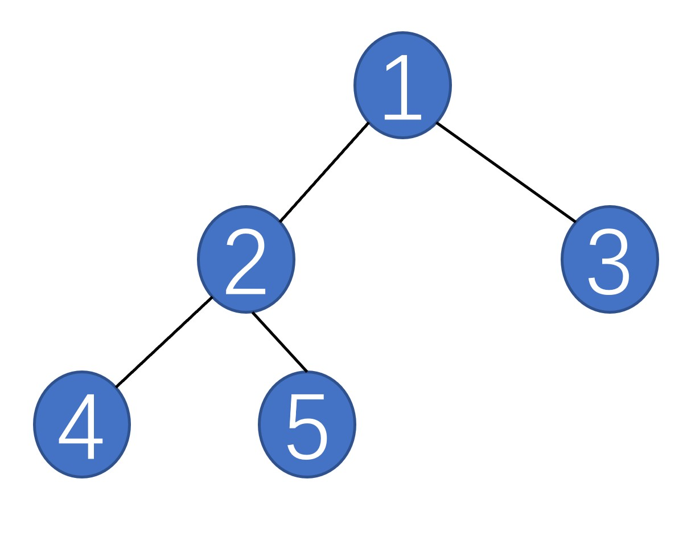

318 树的先序遍历
- 问题描述
- 先序遍历
- 实现
问题描述
如果要实现遍历一棵树的所有结点，有两种方式，一种是深度优点，一种是广度优先。深度优先是按照递归的方式遍历，而广度优先则是按照层级进行遍历
先序遍历
对于任意一个树，只存在根结点、左子树和右子树。所谓先序遍历即是先遍历根结点，再遍历左子树，再遍历右子树，遍历子树的时候也按照这种模式进行。
中序遍历和后序遍历也很简单，先遍历左子树，再遍历根结点，再遍历右子树，后序遍历则是按照左子树、右子树、根结点的顺序遍历。
以下图为例来说明先序遍历的过程：
-
首先遍历根结点，得到1
- 然后遍历左子树,遍历左子树时也先遍历根结点，得到左子树的根结点2
- 左子树的左子树只有一个结点4，左子树的右子树为5
- 遍历右子树，右子树只有一个结点为3
- 最终的结果是1,2,4,5,3

实现
class TreeNode:
def __init__(self, val=0, left=None, right=None):
self.val = val
self.left = left
self.right = right
def preorderTraversal(root):
def preorder(root):
if not root:
return
res.append(root.val)
preorder(root.left)
preorder(root.right)
res = list()
preorder(root)
return res
tree = TreeNode(1, TreeNode(2), TreeNode(3))
tree.left.left = TreeNode(4)
tree.left.right = TreeNode(5)
print(preorderTraversal(tree))
小结
理解递归在树的遍历中的应用
掌握先序遍历树的方法
习题
- 尝试实现中序遍历
- 尝试实现后序遍历
打赏
赠人玫瑰，手有余香。您的打赏是我们前进的动力！